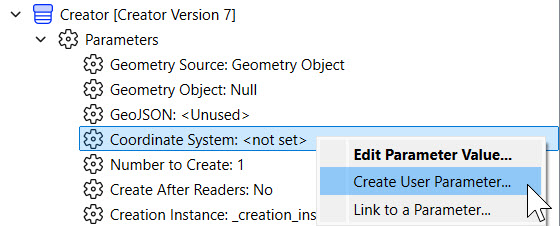
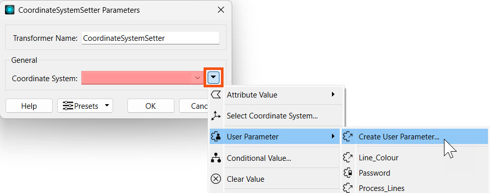
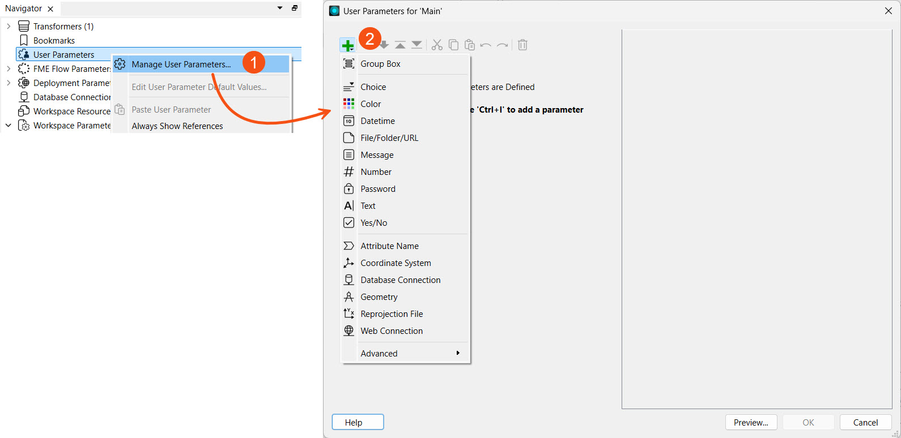
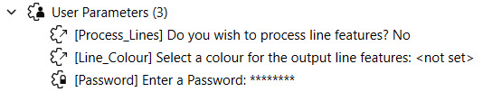
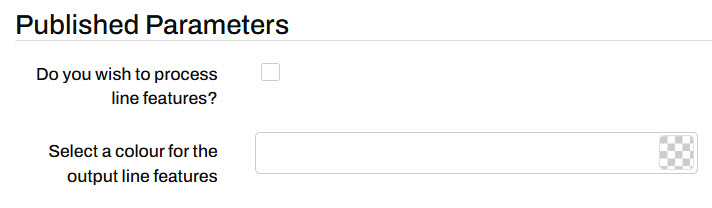

Learning Objectives
After completing this lesson, you’ll be able to:
- Define different parameters in FME.
- Explain how user parameters can give end-users control over how workspaces run.
- Create and manage user parameters using the Parameter Manager.
- Access user parameters as published parameters on FME Flow.
What are Parameters?
Parameters are controls that define how FME operates; for example, how a reader reads data, how a transformer transforms it, and how a writer writes it. Almost every component in FME has parameters of one type or another. You've already run into them while using FME.

When you order food at a restaurant, the chef decides how long it needs to be cooked, at what temperature, and using what equipment. They also decide the amount of seasoning it needs and what plate to present it on. Like an FME author, these are the parameters that control the results, and as the creator of the meal, I get to choose how best to set them.
This lesson will overview the different types of parameters available within FME and introduce user parameters. User parameters are the key to giving the end-user control over self-serve workspaces.
Types of Parameters
Parameters are what control FME translations and transformations. Some parameters are set solely in FME Workbench to control different translation components:
- FME Parameters
- Reference a specific FME system setting
- For example, FME_WORKSPACE_DIR is the folder name where the workspace resides and may change values as the workspace is moved to different locations
- Workspace Parameters
- Specific settings that apply to running and storing a workspace
- For example, the file path and name of the workspace log file location
- Reader and Writer Parameters
- Distinct parameters that apply to each format and control how data is read or written
- For example, the source or destination file the reader or writer is using
- Feature Type Parameters (a subset of Reader and Writer parameters)
- Control how a single feature type is read or written
- For example, the geometry column name for a table which varies across individual tables
This training only focuses on working with parameters alongside FME Flow. For more in-depth training on parameters in FME Form, you can take the FME Form Advanced module Create Flexible Workspaces with Parameters.
Most of the available parameters are determined by the workspace's author and cannot be altered once the workspace is published to FME Flow. The parameters that are accessible from FME Flow are:
- User Parameters
- Exposed parameters that workspace end-users can set to control input values
- For example, a user can set the input file to be read with a user parameter linked to a reader parameter
- FME Flow Parameters
- Reference FME Flow system settings when a workspace is run from FME Flow
- For example, the FME_SHAREDRESOURCE_DATA parameter links to the FME Flow Resources' Data folder
- Deployment Parameters
- Reference reusable values stored in the FME Flow Deployment Parameter Store
- For example, a database connection that varies in production and development environments is referenced through a deployment parameter
In FME Flow Automations, there's also Automation Parameters and Manual Parameters. These will be covered in the Build Basic Automations and Build Versatile Automations modules later in the Flow Authoring learning path.
User Parameters
Although workspace authors set most of the parameters, the end-user must be able to set some of them in some cases.
User parameters are methods for getting input into a workspace, enabling users to set values for their translation. Any parameter in FME can be presented to the user as a choice to be made when running a workspace. The user chooses the value for that parameter when running the workspace in FME Workbench or on FME Flow, giving the user greater control and customization on the workspace readers, transformers, and writers.
For self-serve systems, user parameters are most commonly used to set:
- Coordinate systems to deliver data in
- Which feature types (layers) to deliver
- What geographic area (Bounding Box or Area of Interest) to deliver data for
- Any other Reader, Writer, or Transformer parameters of use to the user
With FME Flow, the key to successful workspace authoring is flexibility. Workspaces need to be flexible to allow end-users to make choices without seeing all of the complexity of the workspace or the data behind it. Parameters are one way to accomplish this.
Creating and Managing User Parameters
User parameters can be created in different ways, depending on how you author the workspace. The most common ways to create parameters are:
1) Directly from another parameter in the Navigator window, such as reader, writer, or transformer parameters

2) From within reader, writer, or transformer settings

3) From within the Parameter Manager on FME Workbench, accessed by right-clicking User Parameters in the Navigator and choosing Manage User Parameters...

If a user parameter is created from within the Parameter Manager, it needs to be linked to the parameter value where the input parameter is to be referenced and used.

Parameter Manager
You can add, configure, reorder, and group parameters in the Parameter Manager.
The left-hand side of the Parameter Manager is where all of your created parameters are shown, as well as options to add new ones, group, copy and paste, reorder and delete.
The right-hand side is the properties for the newly created or selected parameter.

In the parameter properties, you can customize the requirements and display for each parameter. If a parameter is required, it must be given a value in order for the workspace to run and the Run button will be disabled if the value is empty.
Published Parameters
When a user parameter is made available to the end-user, it is called a published parameter. In a self-serve application, published parameters are important for letting the end-user control how the data is served. If the user parameter is unpublished, it is not visible to be edited by the end-user on FME Flow when running the workspace.
In FME Workbench, unpublished parameters are denoted by the lock symbol. In the image below, the Password parameter is unpublished while the other parameters are published.

Only the published parameters are visible when running a workspace on FME Flow. Unpublished parameters will use the default value if they're required.

Now you can use user parameters as published parameters on FME Flow to design user-controlled workspaces.